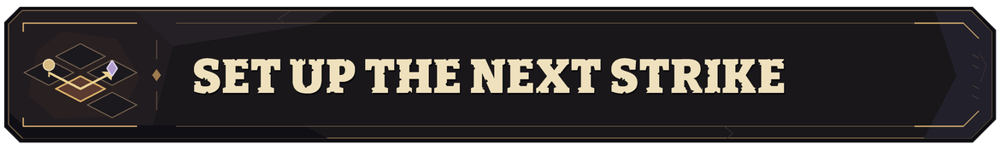
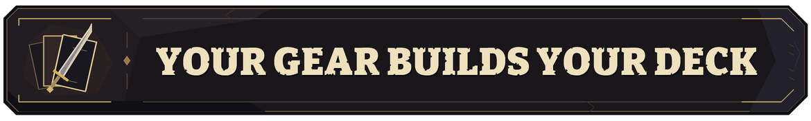
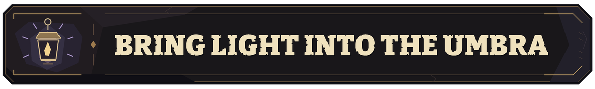
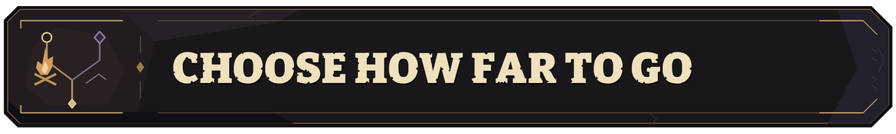

ABOUT THIS GAME
Escape the Umbra brings roguelike deckbuilding to an isometric, turn-based battlefield. Your equipment supplies your cards. Positioning, timing and elemental combinations determine what you can do with them.

Push a crawler into a group, step into range, and catch all three enemies in a cross of fire. Combine card plays with movement to line up area attacks, exploit traps or get clear of danger. Raise elemental intensity for stronger card effects. Enemies and traps draw on that same power.

A weapon brings its own cards. Swap a greatsword for a rapier, choose which spells to carry, and change how your deck plays between fights. Pick a spell after combat, browse the Scavenger’s stock, and build around the equipment and relics you find.

The deeper you descend, the more of each room the Umbra conceals. Hidden enemies still take their turns. Light reveals them and opens new targets: pin a foe with Root Snare, illuminate its neighbors, then send Chain Bolt through the exposed group.

Choose your route through fights, shops and campfires. At a campfire, heal and continue, unlock permanent skills with your embers, or carry those embers out and end the run. Push on toward the dragons below when your build is ready.